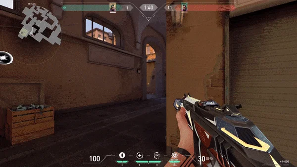
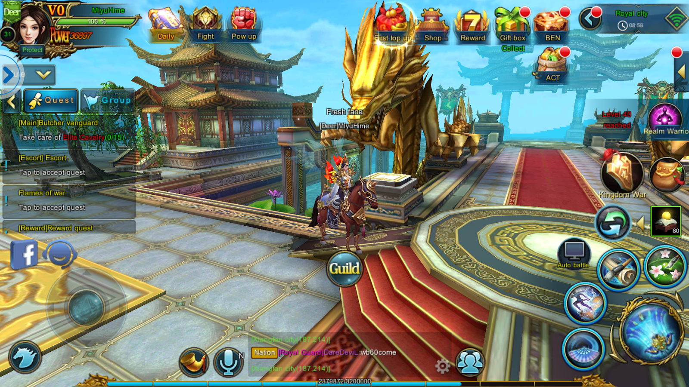

GAMESPACE
GAMES YOU MIGHT LIKE FROM THIS SPACE
| COME HERE! |

CALL OF DUTY: MOBILE
The game features a variety of multiplayer modes, including Team Deathmatch, Domination, Capture the Flag, and Hardpoint.
It also features a battle royale mode called Battle Royale. Players can choose from a variety of characters, weapons, and equipment.
Call of Duty: Mobile has been praised for its graphics, gameplay, and variety of content. It has also been criticized for its microtransactions.

VALORANT
The game is set in the near future and features a cast of agents from around the world.
Players can choose from a variety of agents, each with their own unique abilities.
The game features a variety of game modes, including the main mode, Search and Destroy.
In Search and Destroy, two teams of five players compete to plant and detonate a bomb, or to prevent the other team from doing so.
The attacking team has 13 rounds to plant the bomb, while the defending team has 12 rounds to prevent the bomb from being planted or to defuse it if it is planted.
The first team to win 13 rounds wins the match.

SWORDS OF ROMANCE
Sword of Romance is a popular MMORPG that has been praised for its high-quality graphics,
smooth gameplay, and variety of content.However, the game has also been criticized for its pay-to-win mechanics.
Some players argue that the game is too pay-to-win, while others argue that it is possible to be successful in the game without spending money.
It is important to note that the game does offer a variety of ways to earn in-game currency without spending money, such as completing quests and dungeons.
Ultimately, whether or not Sword of Romance is a good game depends on your personal preferences.
If you are looking for a high-quality MMORPG with a variety of content, then Sword of Romance is a good choice.

THE SIMS
The Sims games are known for their high level of customization and replayability.
Players can create Sims that look and act exactly like them, or they can create Sims that are completely different from them.
Players can also build custom homes and neighborhoods, and they can download custom content from other players to add even more variety to their game.
The Sims series has been praised for its innovative gameplay, its ability to appeal to a wide range of players, and its positive representation of
The games have also been criticized for their lack of challenge and their focus on materialism.

BITLIFE
BitLife is a text-based life simulation game developed by Candywriter LLC.
It was released for iOS and Android devices in 2018. In BitLife, players control the life of a simulated person from birth to death.
Players make choices that affect their character's education, career, relationships, health, and happiness.
BitLife is known for its dark humor and its wide range of possible outcomes. Players can choose to live a relatively normal life, or they can engage in more criminal or risky activities.
BitLife also includes a number of celebrity challenges, where players try to live the life of a famous person.BitLife has been praised for its unique gameplay, its high level of customization, and its replayability.
The game has also been criticized for its mature themes and its potential to be addictive.

TSUKI
Tsuki is a mobile game developed by HyperBeard and released in 2018.
The game is about a rabbit named Tsuki who leaves his corporate job in the city to move to his grandfather's carrot farm in the countryside.
In Tsuki, players can help Tsuki renovate his farm, grow carrots, and befriend the other animals in the village. Players can also fish, catch bugs, and cook meals for Tsuki.
Tsuki is a casual game with a focus on relaxation and exploration. There are no goals or objectives to complete, and players are free to do whatever they want at their own pace.
The game has been praised for its cute art style, its relaxing atmosphere, and its charming characters. It has also been criticized for its lack of gameplay and its slow pace.